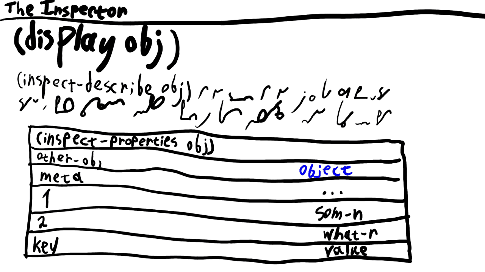

This SRFI is currently in draft status. Here is an explanation of each status that a SRFI can hold. To provide input on this SRFI, please send email to srfi-279@nospamsrfi.schemers.org. To subscribe to the list, follow these instructions. You can access previous messages via the mailing list archive.
Received: 2026-08-11
60-day deadline: 2026-10-10
Draft #1 published: 2026-08-11
Abstract
Interactive REPL-driven systems (that most Schemes are) need a way to get detailed information on a given piece of data.
Inspectors, as these are conventionally called.
This SRFI defines a basic protocol for inspectors, consisting of two procedures:
inspect-properties and inspect-describe.
Some suggestions for standard and popular types’ inspection are also provided.
Issues
??? Optional section that may point out things to be resolved. This
will not appear in the final SRFI.
Inspectors, graphical or textual, have a relatively long history in Lisps.
These go as far as seventies, with Maclisp having a DESCRIBE function,
and Medley Interlisp environment providing an INSPECT function,
among other introspection facilities of its programming system.
Outside the Lisp family, these tools have different names:
memory debuggers (low-level byte glance),
reflection (programmatic access to (usually) object metadata),
serialization / serializability (storage-oriented data description),
and introspection.
Inspectors are cohabitant with REPLs (read-eval-print loops), these having a long history in Lisps too:
interactive inspection of the object implies that the environment is interactive and REPL-like;
and having a REPL with arbitrary computation results implies that one might want to drill down on these results in detail.
In Scheme in particular, the need for inspectors is highlighted by multiple SRFIS:
SRFI 102: Procedure Arity Inspection and
SRFI 191: Procedure Arity Inspection
highlight the need for procedure inspection;
SRFI 69: Basic hash tables
and a whole family of hash table SRFIs provide “introspection” / “reflection” procedures to get meta-information on hash tables;
while SRFI 99 and R6RS explicitly name their record-type-querying procedures that: inspection.
However, all of these efforts are dispersed around and isolated into distinct type-specific SRFIs.
Scheme needs generic inspectors.
This SRFI provides a protocol and pointers that interactive inspectors for arbitrary data structures can be build from.
inspect-properties and
inspect-describe are two procedures provided by this SRFI.
inspect-properties allows previewing the structured key-value (meta)data about an object,
while inspect-describe provides simple, human-readable description of an object for display in the REPL or UI (user interface).
A list of useful properties per data type is provided for ease of implementation and consolidation of inspectors.
Sample implementation is also provided for multiple implementations.
Specification
There are only two procedures in this SRFI:
inspect-properties and inspect-describe.
These are enough to implement a rich inspector.
inspect-properties provides structured data to build the body of inspector from,
while inspect-describe is useful in building a quick glance section or UI header.
A potential and conventional inspector UI can thus look like

Inspector UI with the procedures used to fill it
procedure (inspect-properties object) → alist
This procedure returns a non-dotted alist of inspect properties for the object.
These range from internal implementation details to standard queries to alternative formats to inlined element listings.
“Non-dotted alist” means an alist where the value of the pair is not its cdr,
but rather a second element of the list (cadr).
This restriction is in place to allow extending the returned list of properties with those beyond the key-value pair.
Say, by adding UI display details or property setters as third and other elements in the entry.
It is recommended that implementations preserve read/write invariance and thus only use properly write-able data in property keys and values.
Having that, one can easily use standard output facilities in UIs without the fear of breaking something.
And store the inspection properties elsewhere.
Say, as alternative to memory dumps for forensic investigation.
While type-identifying properties like exact? and input-port? might be useful,
they are not specified.
Because type of the value is provided / contextually apparent as a property in itself already.
Most other properties specified here cannot be queried directly / inferred from a type; or are inherent properties of the object.
E.g char-numeric? is not a type predicate, but rather a category of a char.
In case the implementation has no information for a given property, this property should be omitted instead of using some dummy value like #f.
This is to ensure that no field is confusing the inspector user about its presence.
While this specification is not binding,
it is highly recommended that implementations provide as many of the properties below as possible.
Over the implementation-specific names and fields.
For greater compatibility and clear expectations from this protocol.
Lastly, a note on notation:
Property+value listings have special notation, which, although considered intuitive by the author, needs explanation:
name → type
Property named by name (likely symbol) with value having the type type.
I.e. a list like (name value-of-type)
0..N → type
type-d elements of the sequence as properties in the properties.
I.e. ((0 1) (1 "hello") (2 #\null)) inlined into the properties.
field… → type
A key-value version of the above indexed inlining.
[type] (to the right of the → arrow)
A list of elements of type type.
type1 | type2 (to the right of the → arrow)
A value of either type type1 or type2.
Object properties
id → integer
Unique ID of the object, likely matching its memory location, garbage collector tag, or hash, whenever suitable.
hash → integer
Hash of the object, as used in hash-table functions.
Almost always hash-by-identity.
Often the same as id.
location → implementation-specific
Representation of the memory location the object resides in.
size → integer
Amount of memory occupied by the object, in bytes.
Parts of an exponentially-encoded real number.
Sign is one of -1, 0, 1.
Exponent and mantissa as per IEEE 754.
“Real-significand” can be provided as an additional “real-mantissa” alias.
Length of respective parts of a real number. Given that all real? numbers have signs, real-sign-length is unnecessary, but can be added if implementors wish so.
real-base → integer
The numeric base the exponential representation relies on (almost always equal to 2).
real-precision → integer
The number of decimal places in “real-base” the type of the number can guarantee the exactness of.
integer-length → integer
Number of bits occupied by the integer.
integer-object → object
The object matching the ID represented by the integer.
integer->char → object
Character corresponding to the integer, whenever possible.
Numeric representation of the boolean used by the implementation.
While quite obscure, this property might still be useful in deep implementation inspection.
An example case: for an implementation written in BASIC boolean->integer for #t is -1 and not 1.
Pair (pair?) properties
Pairs in this section are implied to be non-null? lists, possibly dotted, possibly circular.
Length of the list (if the pair is one) and the length of potentially circular list.
list->string → string, list->vector → vector
Conversions of the pair, if it’s a convertible (non-dotted, non-circular) list.
0..N → object
Elements of the list inlined into properties.
In case the list is dotted, the last element resides in “dotted-last” (above).
In case the list is circular, only the elements that precede the circular tail are included.
field… → object
In case the pair is an alist, its pairs are inlined into properties.
Symbol (symbol?) properties
symbol->string → string
Symbol name / string representation.
symbol-plist → list
List of properties attached to the symbol, whenever present.
Character (char?) properties
char->integer → integer
Integer representation of the character.
digit-value → integer
For characters representing digits, their numeric values.
char-name → string
Human-readable name of the character, e.g. “MALE WITH STROKE AND MALE AND FEMALE SIGN.”
char-category → symbol
Unicode codepoint category, e.g. “Ll.”
char-macro → implementation-specific
Whenever the char has a macro / syntax / dispatcher bound to it.
As per SRFI 191 and SRFI 102 respectively.
While both of these were withdrawn, they serve and important purpose: allowing basic yet essential introspection of procedures.
procedure-arglists → [pair | symbol]
List of possible argument lists of the procedure.
Procedures can be defined via case-lambda and thus have multiple arities / arglists.
The symbol value can happen if the procedure accepts rest argument only,
i.e. (lambda arg ...).
Implementations are encouraged to only return standard-shaped arglists (required + rest),
but may return implementation-specific extended lambda lists.
Record properties, whenever inspectable.
Note that e.g. R6RS opaque records might have no inspectable properties at all.
record-rtd, record-type → rtd or another implementation-specific representation
Representation of the type the record is an instance of.
field… → object
symbol or integer indexed fields with their respective values
In case the returned record type is a record type descriptor (RTD) from R6RS / SRFI 99
or an equivalent, it might be inspectable, too.
Possible fields (rtd can be replaced by record-type or other suitable phrase):
hash-table-equivalence-function, hash-table-hash-function → symbol
Names of procedures defining hash table behaviors.
hash-table-size → integer
Number of entries in the hash table.
hash-table-weak?, hash-table-mutable? → boolean
Boolean properties for prominent variations of hash tables.
hash-table-weakness → 'key | 'value | 'both
The part of entries that the weakness of the table depends on, if any.
key… → object
Keys and values in the hash table, essentially converted to properties alist.
Hash table effective size, rehash threshold, and rehash multiplier are not listed due to their relative obscurity and lack of implementation practice.
Numeric vectors (s8vector? etc.) properties
Defined in SRFI 4: Homogeneous numeric vector datatypes,
these are too important to avoid inspecting them.
In this section, a notation of “TAG” representing vector tag (s8, f64 etc.) is used in property names.
Name of one of the pre-defined character sets, like char-set:lower-case.
char… → char
Listing of all characters in the set, as self-valued properties.
Set and bag (set?, bag?) properties
set-element-comparator → symbol
Name of the procedure used to compare elements in the set.
object… → object
Set / bag elements, inlined into properties, keyed and valued by themselves.
Bag properties are suggested to have only one pair in order
to not duplicate work and to delegate everything to set properties.
However, implementations may freely add more bag-specific properties.
bag->set → set
Used for bag inspection, delegated to set inspection.
Library properties
While not represented in standard type system, library is a valid concept deserving inspection.
Prints a human-readable and maximally useful description of the object to port
(or current-output-port).
(The exact definition of “useful” output is left to the implementor.)
Example of opinionated output from the author’s trivial-inspect Common Lisp library, adapted to Scheme:
The source for the sample implementation can be found in
the Github
repo or in this
.tgz file.
Acknowledgements
Thanks to Peter McGoron and John Cowan for profound discussion on many properties and for enlightening my Common Lisp corrupted soul to the ways of Scheme.
Permission is hereby granted, free of charge, to any person
obtaining a copy of this software and associated documentation files
(the "Software"), to deal in the Software without restriction,
including without limitation the rights to use, copy, modify, merge,
publish, distribute, sublicense, and/or sell copies of the Software,
and to permit persons to whom the Software is furnished to do so,
subject to the following conditions:
The above copyright notice and this permission notice (including the
next paragraph) shall be included in all copies or substantial
portions of the Software.
THE SOFTWARE IS PROVIDED "AS IS", WITHOUT WARRANTY OF ANY KIND,
EXPRESS OR IMPLIED, INCLUDING BUT NOT LIMITED TO THE WARRANTIES OF
MERCHANTABILITY, FITNESS FOR A PARTICULAR PURPOSE AND
NONINFRINGEMENT. IN NO EVENT SHALL THE AUTHORS OR COPYRIGHT HOLDERS
BE LIABLE FOR ANY CLAIM, DAMAGES OR OTHER LIABILITY, WHETHER IN AN
ACTION OF CONTRACT, TORT OR OTHERWISE, ARISING FROM, OUT OF OR IN
CONNECTION WITH THE SOFTWARE OR THE USE OR OTHER DEALINGS IN THE
SOFTWARE.